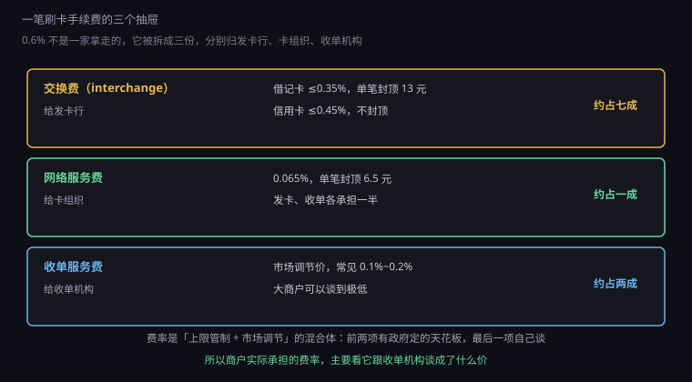
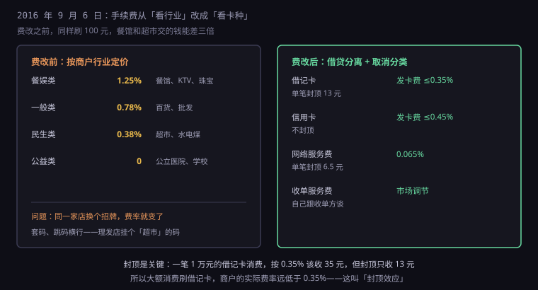
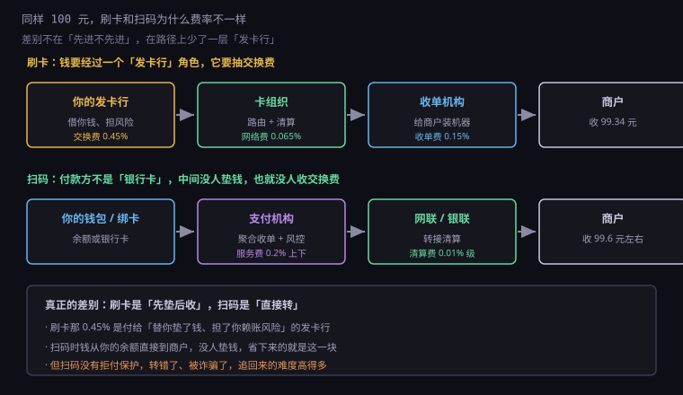

约 0.36 万字 · 3 张图 · 顾客付 100，商户收 99.34，那 0.66 元去了三个抽屉
先看一个真实的对账画面。
顾客消费 100 元，刷卡。商户的手机收到一条通知： "支付成功，到账 99.34 元"。
少了 0.66 元。这 0.66 就是手续费，行话叫商户扣率（MDR，Merchant Discount Rate）， 意思是"商户为了收这笔钱，愿意让出的折扣"。
注意它不叫"服务费"，叫"扣率"。因为它不是额外收你一笔， 而是从结算款里直接扣掉，商户看到的就是净额。 这也是为什么很多小老板说不清自己费率多少—— 它从来没被单独扣过，一直藏在到账金额里。
0.6% 是信用卡的常见价格。借记卡低一些，大概 0.5% 上下。 扫码支付常见 0.38%，有些行业能做到 0.2%。 这些数字之间的差距不是随便来的，每一档背后都有一套定价逻辑。
那 0.66 元不是给了一家公司，它被分进三个抽屉。

第一个抽屉：交换费（interchange），给发卡行。 这是最大的一块，通常占全部手续费的一半以上到七成。 中国的上限是：借记卡不超过交易金额的 0.35%，单笔封顶 13 元； 信用卡不超过 0.45%，不封顶。
第二个抽屉：网络服务费，给卡组织。 0.065%，单笔封顶 6.5 元，而且这笔钱由发卡行和收单机构各承担一半—— 所以实际从商户身上出的是收单机构那一半。
第三个抽屉：收单服务费，给收单机构。 这一项是市场调节价，没有政府定的天花板，收单机构想收多少谈多少。 常见 0.1% 到 0.2%，也有低到 0.05% 的，看商户的谈判能力。
三项相加，就是你看到的 0.6% 左右。 这个结构决定了后面所有的事： 前两项有上限，能谈的只有第三项。 所以收单机构之间打价格战，打的永远是它自己那一份利润。
很多人第一次看到这个分配会觉得不公平：发卡行什么也没干，凭什么拿七成？
它其实干了三件最难的事。
第一，它替你垫了钱。 你在餐馆刷卡，钱是从发卡行的账上先划给商户的，你的还款要等到几十天后。 这几十天的资金占用，是实打实的成本。 信用卡还有一段免息期，那段时间的钱完全是银行在垫。
第二，它承担了你赖账的风险。 你刷完卡不还钱、跑路、破产，损失都是发卡行吃。 这个风险要用利息和手续费来覆盖，不然没人愿意发卡。
第三，它承担了整套获客和运营成本。 发卡、寄卡、客服、反欺诈、账单、积分权益，全在它身上。 一张信用卡的获客成本，行业里常见几百块。
所以交换费在经济学上有个专门的名字，叫双边市场定价： 一边是持卡人（银行给它补贴、给它权益），一边是商户（银行向它收费）。 补贴持卡人的钱，从商户那里收回来。
这也解释了一个反直觉的现象：信用卡的权益越好，商户的费率越高。 机场贵宾厅、航空里程、消费返现，这些钱最终都从交换费里出。 你以为银行在送你东西，其实是商户在请客。
交换费高这件事，全世界都在吵。因为它的本质是"用商户的钱补贴持卡人"， 而商户没有还价能力——它不接受刷卡，就会丢掉这批顾客。
所以很多国家直接出手限价。欧盟 2015 年立法把交换费上限压到 信用卡 0.3%、借记卡 0.2%，比中国还低； 美国 2010 年的杜宾修正案专门管借记卡，要求发卡行不能把交换费定得过高， 并且允许商户拒绝小额刷卡。
这套管制的逻辑很直接：交换费不是市场竞争出来的价格，是发卡行单方面定的， 商户只能接受。既然市场失灵，就由监管来定价。 中国 96 费改的封顶，本质上是同一个思路，只是力度更温和。
中国的费率不是一开始就长这样。2016 年 9 月 6 日有一次大改，业内叫"96 费改"。

费改之前，费率看的是"你是什么行业"。 餐饮娱乐 1.25%，一般零售 0.78%，超市水电煤 0.38%，公立医院学校 0。 分类很细，逻辑也说得通：不同行业的利润率不一样，能承受的费率也不一样。
但这条规则一落地就被玩坏了。既然费率由行业决定，那商户就有动机伪装行业。 于是出现了套码和跳码：
套码是给餐馆装一台"超市"的机器，费率立刻从 1.25% 降到 0.38%。 跳码更隐蔽：同一台机器，根据金额自动切换到不同行业的商户号， 小额走民生类，大额走一般类，账单上还会显示成不同的商户名。
结果就是费率表形同虚设，还顺带搞乱了整个统计体系。 银行看到的"餐饮消费"其实是理发、是 KTV、是健身房， 连宏观经济数据都被污染了。
费改之后，规则换了：不看行业，看卡种。 借记卡一个价，信用卡一个价，行业分类取消，公益类仍然零费率。 这样一来，套码就没意义了——不管你装成什么行业的机器，费率只跟顾客刷的卡有关。
这次改革的另一个关键动作是引入封顶： 借记卡的交换费单笔最高 13 元，网络服务费单笔最高 6.5 元。
封顶这个设计，影响比它看起来大得多。
假设你买一台 1 万元的笔记本，刷借记卡。 按 0.35% 算，交换费应该是 35 元；但因为有 13 元的封顶，实际只收 13 元。 加上网络费和收单费，总费率可能只有 0.2% 左右，比小额消费便宜一大截。
所以建材市场、汽车 4S 店、房产中介这类大额消费场所， 特别喜欢让顾客刷借记卡——省下来的都是真金白银。 反过来，如果刷信用卡，0.45% 没有封顶，1 万元就要交 45 元， 有些商家会直接跟你说"信用卡要加 1%"，虽然这个做法本身不合规。
这也造成了一个有意思的现象： 同样一笔钱，走不同的卡，商户的成本能差三倍。 一笔 1 万元的消费，刷借记卡商户可能只出 20 块，刷信用卡要出 60 块， 扫码可能只出 38 块。商户当然会引导你用最便宜的那种。
你在收银台看到的"扫码立减 2 元"、"信用卡满 100 减 10"， 背后都是这套成本结构在起作用——补贴你的钱， 要么来自商户省下的手续费，要么来自支付机构的获客预算。
既然收单服务费是市场价，那就有议价空间，而议价能力取决于体量。
一家便利店一天刷 500 笔，一家连锁超市一天刷 50 万笔。 对收单机构来说，后者是"能不能完成年度指标"的关键客户， 所以不但费率能压到接近成本，甚至还会倒贴—— 免费送机器、送系统、送营销资源。
这就是为什么大商户的费率能到 0.2%，而街边小店是 0.6%。 小店的成本里其实包含了收单机构为服务它付出的固定成本： 装机、维护、客服、对账，这些跟交易额无关，跟商户数量有关。 一家一天只刷十笔的店，收单机构很可能是不赚钱甚至亏钱的。
另一个影响费率的因素是风险等级。 预付费卡、珠宝、游戏点卡、境外业务，这些行业的拒付率和欺诈率高， 收单机构要收风险溢价，费率自然更贵。 有些高风险行业甚至会被直接拒之门外。
这也是为什么很多小商户宁愿用个人收款码—— 它不需要商户资质、不需要签合同、费率还低。 代价是：额度受限、没有发票、出了纠纷没有商户身份可依。 便宜的东西，总在别处收费。
最后一个问题：同样 100 元，刷卡收 0.6%，扫码收 0.38%，为什么？

关键差别在于钱从哪儿出。
刷卡时，付款方是"你的发卡行"。它要先垫钱给商户，再等你还款。 这个垫资和风险，就是交换费存在的理由。
扫码时，付款方是"你钱包里的余额"，或者"你绑定的那张卡"。 如果是余额，钱直接从你的账户划到商户，中间没有任何人垫资， 自然也没有理由收交换费。 如果是绑卡支付，那笔钱会走网联或银联的转接清算， 但费率结构里没有"发卡行交换费"这一大块——因为它不承担垫资和拒付风险。
省掉的这一块，就是 0.6% 和 0.38% 之间的差。
但便宜是有代价的。扫码支付没有拒付机制： 你把钱转错了、被骗子诱导付款了，钱是实时到账的， 追回要靠报警和协商，不像信用卡那样可以发起拒付、让银行去跟商户要证据。
所以这两种支付方式的分工其实很清楚： 小额、熟人、现场交易用扫码，快且便宜； 大额、陌生商户、需要售后保障的用刷卡，贵但有人兜底。 你在网上买贵重物品时，信用卡仍然是更安全的选择，原因就在这里。
合同上写的是"商户承担手续费"，但经济学上这笔钱不会停在商户那儿。
商户把手续费算进成本，成本算进价格。 所以最终为这 0.6% 付钱的，是所有顾客——包括那些用现金付款的。
这在经济学里叫交叉补贴：用现金的人享受不到刷卡权益， 却要为别人的刷卡成本多付一点钱。 这也是为什么有些商家会给现金折扣，或者对刷卡设最低金额—— 它在试图把成本推回给用卡的人。
发卡行给的积分、返现、机场贵宾厅，本质上是从商户那里收来的交换费， 转手补贴给了持卡人。 所以"刷卡有返现"这件事，一直是商户和消费者之间的一次财富转移， 银行只是中间人。
小商户在这个结构里最吃亏。它既没法像连锁店那样谈低收单费， 也没法像大平台那样用自有资金补贴费率， 只能把成本默默加进每一份饭菜里。 所以你会看到有些小店挂出"现金 9 折，刷卡原价"， 那不是它在耍花样，是它在用最朴素的方式纠正一笔它控制不了的转移支付。